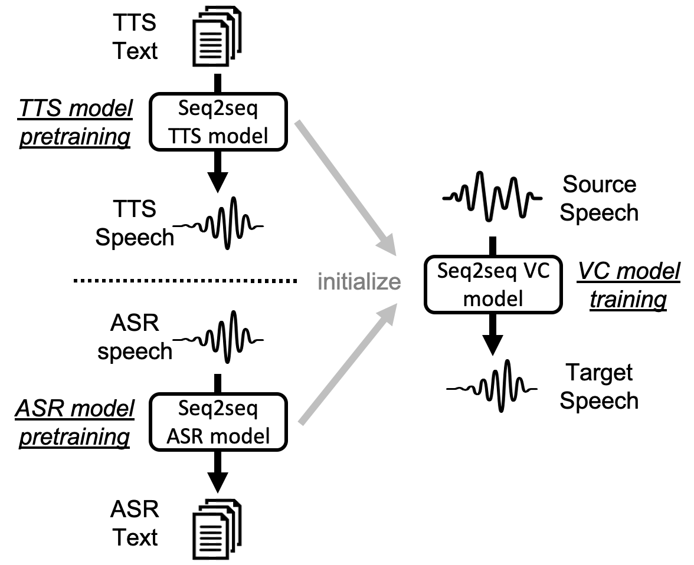

Comments: IEEE/ACM Transactions on Audio, Speech and Language Processing.
Abstract: Sequence-to-sequence (seq2seq) voice conversion (VC) models are attractive owing to their ability to convert prosody. Nonetheless, without sufficient data, seq2seq VC models can suffer from unstable training and mispronunciation problems in the converted speech, thus far from practical. To tackle these shortcomings, we propose to transfer knowledge from other speech processing tasks where large-scale corpora are easily available, typically text-to-speech (TTS) and automatic speech recognition (ASR). We argue that VC models initialized with such pretrained ASR or TTS model parameters can generate effective hidden representations for high-fidelity, highly intelli- gible converted speech. We apply such techniques to recurrent neural network (RNN)-based and Transformer based models, and through systematical experiments, we demonstrate the effective- ness of the pretraining scheme and the superiority of Transformer based models over RNN-based models in terms of intelligibility, naturalness, and similarity.
Main concept

Dataset
We conducted all our experiments on the CMU Arctic database.
A male speaker (bdl) and a female speaker (clb) were chosen as source speakers, and a male speaker (rms) and a female speaker (slt) were chosen as the target speakers.
Models
Source, Target: Natural speech of the source and target speakers.
Analysis-Synthesis: Analysis-synthesis samples from the Parallel WaveGAN vocoder.
VTN: The Voice Transformer Network (Transformer-VC).
RNN: The RNN-based model.
Speech Samples
Transcription: There were stir and bustle, new faces, and fresh facts.
Model
Pretraining
# training utterances
clb(F)-slt(F)
bdl(M)-slt(F)
clb(F)-rms(M)
bdl(M)-rms(M)
Source
-
-
Target
-
-
Analysis-Synthesis
-
-
VTN
None
932
80
TTS
932
80
ASR
932
80
RNN
None
932
80
TTS
932
80
Transcription: And there was Ethel Baird, whom also you must remember.